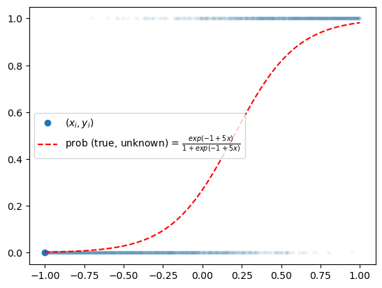

import torch
import torchvision
import numpy as np
import pandas as pd
import matplotlib.pyplot as plt
import fastai.vision.all09wk-2: 중간고사
1. 크롤링을 통한 이미지 분석 및 CAM – 30점
(1) 두 가지 키워드로 크롤링을 수행하여 이미지자료를 모아라. (키워드는 각자 마음에 드는 것으로 설정할 것) – 01wk-1 의 HW를 그대로 활용해도 무방
(2) ImageDataLoaders.from_folder 를 이용하여 dls를 만들어라.
(3) resnet34를 이용하여 학습하라.
(4) CAM (class activation mapping)을 이용하여 (3)의 모형의 판단근거를 시각화하라.
2. 생성모형 / GAN – 40점
아래는 torchvision을 활용하여 MNIST 데이터를 불러오고 DataLoader를 생성하는 코드이다.
# Data preprocessing
ds = dataset = torchvision.datasets.MNIST(
root = './data',
download=True,
transform = torchvision.transforms.Compose([
torchvision.transforms.Resize(64), # 이미지를 (64,64)로 resize
torchvision.transforms.ToTensor(),
torchvision.transforms.Normalize((0.5,), (0.5,))
])
)
# Dataloader
dl = torch.utils.data.DataLoader(
ds,
batch_size=120,
shuffle=True,
)(1) iter와 next를 이용하여 데이터로더의 첫번째 배치를 출력하라. 하나의 배치에 몇개의 이미지가 있는가? 이미지는 흑백인가 칼라인가? 이미지의 크기는 얼마인가?
(풀이)
xi_real, _ = next(iter(dl))xi_real.shapetorch.Size([120, 1, 64, 64])(2) 아래의 함수를 이용하여 하나의 배치에 포함된 이미지를 출력하라.
def imshow(xi_real):
plt.imshow(torch.einsum('cij->ijc',torchvision.utils.make_grid(xi_real, padding=2, normalize=True)))(풀이)
xi_real, _ = next(iter(dl))imshow(xi_real)
(3) 아래의 코드를 이용하여 net_police를 생성하라.
net_police = torch.nn.Sequential(
# Layer1
torch.nn.Conv2d(1, 64, kernel_size=4, stride=2, padding=1, bias=False),
torch.nn.LeakyReLU(0.2),
# Layer2
torch.nn.Conv2d(64, 128, kernel_size=4, stride=2, padding=1, bias=False),
torch.nn.BatchNorm2d(128),
torch.nn.LeakyReLU(0.2),
# Layer3
torch.nn.Conv2d(128, 256, kernel_size=4, stride=2, padding=1, bias=False),
torch.nn.BatchNorm2d(256),
torch.nn.LeakyReLU(0.2),
# Layer4
torch.nn.Conv2d(256, 512, kernel_size=4, stride=2, padding=1, bias=False),
torch.nn.BatchNorm2d(512),
torch.nn.LeakyReLU(0.2),
# Layer5
torch.nn.Conv2d(512, 1, kernel_size=4, stride=1, padding=0, bias=False),
torch.nn.Sigmoid(),
torch.nn.Flatten()
)net_police에 하나의 배치를 넣어보고 각 층별 출력크기를 조사하라.
(풀이)
xi_real, _ = next(iter(dl))print(f'xi_real -- {xi_real.shape}')
print(f'Layer1 -- {net_police[:2](xi_real).shape}')
print(f'Layer2 -- {net_police[:5](xi_real).shape}')
print(f'Layer3 -- {net_police[:8](xi_real).shape}')
print(f'Layer4 -- {net_police[:11](xi_real).shape}')
print(f'Layer5 -- {net_police(xi_real).shape}')xi_real -- torch.Size([120, 1, 64, 64])
Layer1 -- torch.Size([120, 64, 32, 32])
Layer2 -- torch.Size([120, 128, 16, 16])
Layer3 -- torch.Size([120, 256, 8, 8])
Layer4 -- torch.Size([120, 512, 4, 4])
Layer5 -- torch.Size([120, 1])(4) 아래의 코드를 이용하여 net_faker를 생성하라.
net_faker = torch.nn.Sequential(
# Layer1
torch.nn.ConvTranspose2d(100, 512, kernel_size=4, stride=1, padding=0, bias=False),
torch.nn.BatchNorm2d(512),
torch.nn.ReLU(),
# Layer2
torch.nn.ConvTranspose2d(512, 256, kernel_size=4, stride=2, padding=1, bias=False),
torch.nn.BatchNorm2d(256),
torch.nn.ReLU(),
# Layer3
torch.nn.ConvTranspose2d(256, 128, kernel_size=4, stride=2, padding=1, bias=False),
torch.nn.BatchNorm2d(128),
torch.nn.ReLU(),
# Layer4
torch.nn.ConvTranspose2d(128, 64, kernel_size=4, stride=2, padding=1, bias=False),
torch.nn.BatchNorm2d(64),
torch.nn.ReLU(),
# Layer5
torch.nn.ConvTranspose2d(64, 1, kernel_size=4, stride=2, padding=1, bias=False),
torch.nn.Tanh()
)net_faker에 아래의 noise를 넣어보고 각 층별 출력크기를 조사하라.
ni = torch.randn(batch_size, 100, 1, 1)(풀이)
ni = torch.randn(120, 100, 1, 1)print(f'ni -- {ni.shape}')
print(f'Layer1 -- {net_faker[:3](ni).shape}')
print(f'Layer2 -- {net_faker[:6](ni).shape}')
print(f'Layer3 -- {net_faker[:9](ni).shape}')
print(f'Layer4 -- {net_faker[:12](ni).shape}')
print(f'Layer5 -- {net_faker(ni).shape}')ni -- torch.Size([120, 100, 1, 1])
Layer1 -- torch.Size([120, 512, 4, 4])
Layer2 -- torch.Size([120, 256, 8, 8])
Layer3 -- torch.Size([120, 128, 16, 16])
Layer4 -- torch.Size([120, 64, 32, 32])
Layer5 -- torch.Size([120, 1, 64, 64])(5) 아래와 같이 두개의 optimizr 를 선언하라.
optimizr_police = torch.optim.Adam(net_police.parameters(), lr=0.0002, betas=(0.5, 0.999))
optimizr_faker = torch.optim.Adam(net_faker.parameters(), lr=0.0002, betas=(0.5, 0.999))아래의 세부지침에 맞추어 net_police 와 net_faker를 학습하라.
- 5 Epoch을 진행하여 학습할 것
- GPU를 이용하여 학습할 것
(풀이)
bce = torch.nn.BCELoss()net_faker.to("cuda:0")
net_police.to("cuda:0")
for epoc in range(5):
for xi_real, _ in dl:
xi_real = xi_real.to("cuda:0")
ni = torch.randn(120, 100, 1, 1).to("cuda:0")
xi_fake = net_faker(ni).data
yi_real = torch.zeros(120).reshape(-1,1).to("cuda:0")
yi_fake = torch.ones(120).reshape(-1,1).to("cuda:0")
# step1
yi_hat_real = net_police(xi_real)
yi_hat_fake = net_police(xi_fake)
# step2
loss_police = bce(yi_hat_real, yi_real) + bce(yi_hat_fake, yi_fake)
# step3
loss_police.backward()
# step4
optimizr_police.step()
optimizr_police.zero_grad()
#--#
# step1
ni = torch.randn(120, 100, 1, 1).to("cuda:0")
xi_fake = net_faker(ni)
# step2
yi_hat_fake = net_police(net_faker(ni))
loss_faker = bce(yi_hat_fake, yi_real)
# step3
loss_faker.backward()
# step4
optimizr_faker.step()
optimizr_faker.zero_grad()
print(f"epoch = {epoc+1}/5")epoch = 1/5
epoch = 2/5
epoch = 3/5
epoch = 4/5
epoch = 5/5(6) 학습결과를 (2)의 imshow 함수를 이용하여 시각화하라.
(풀이)
ni = torch.randn(120, 100, 1, 1).to("cuda:0")
xi_fake = net_faker(ni).data.to("cpu")
imshow(xi_fake)
3. 단순회귀문제 – 10점
주어진 자료가 아래와 같다고 하자.
torch.manual_seed(43052)
x,_ = torch.randn(100).sort()
x = x.reshape(-1,1)
ϵ = torch.randn(100).reshape(-1,1)*0.5
y = 2.5+ 4*x + ϵplt.plot(x,y,'o')
(1) torch.nn.Linear를 이용하여 아래와 같은 최초의 직선을 생성하는 네트워크를 설계하라. – 1점
\[\hat{y}_i = -5.0 + 10.0 x_i \]
(풀이)
l = torch.nn.Linear(in_features=1,out_features=1,bias=True)
l.weight.data = l.weight.data*0 + 10
l.bias.data = l.bias.data*0 - 5 l(x)[:5], (-5+10*x)[:5] (tensor([[-29.8211],
[-28.6215],
[-24.9730],
[-21.2394],
[-19.7919]], grad_fn=<SliceBackward0>),
tensor([[-29.8211],
[-28.6215],
[-24.9730],
[-21.2394],
[-19.7919]]))(2) 아래의 수식에 대응하는 loss를 계산하라. 여기에서 \(\hat{y}_i\)은 (1)의 결과로 얻은 값을 사용하라. – 1점
\[loss = \frac{1}{n}\sum_{i=1}^{n}(y_i-\hat{y}_i)^2\]
(풀이)
loss_fn = torch.nn.MSELoss()
loss_fn(y,l(x))tensor(85.8769, grad_fn=<MseLossBackward0>)(3) 적당한 matrix \({\bf X}_{n\times 2}\) 와 \(\hat{\bf W}_{2\times 1}\) 을 정의하여 아래와 같이 \(\hat{y}_i\)을 구하라. – 1점
\[\hat{y}_i = -5.0 + 5.0 x_i \]
(풀이)
What = torch.tensor([[-5.0],[5.0]],requires_grad=True)
X = torch.concat([torch.ones(100,1),x],axis=1)
(X@What)[:5], (-5+5*x)[:5] (tensor([[-17.4106],
[-16.8107],
[-14.9865],
[-13.1197],
[-12.3960]], grad_fn=<SliceBackward0>),
tensor([[-17.4106],
[-16.8107],
[-14.9865],
[-13.1197],
[-12.3960]]))(4) 아래의 수식에 대응하는 loss를 계산하라. 여기에서 \(\hat{y}_i\)은 (3)의 결과로 얻은 값을 사용하라. – 1점
\[loss = \frac{1}{n}\sum_{i=1}^{n}(y_i-\hat{y}_i)^2\]
(풀이)
loss_fn(y,X@What)tensor(55.0216, grad_fn=<MseLossBackward0>)(5) (2)에서 얻은 \(\hat{y}_i\) (4)에서 얻은 \(\hat{y}_i\) 중 무엇이 더 적절하다고 생각하는가? 이유는 무엇인가? 손실(=loss)에 근거하여 설명하라. – 2점
(풀이)
(4)에서 얻은 \(\hat{y}_i\)이 더 적절하다. 이유는 loss값이 더 작기 때문. (55.0216 < 85.8769)
(6) .backward() 를 이용하여 (2)와 (4)에 해당하는 미분값을 계산하라. 학습률이 0.01인 경사하강법을 이용하여 (1),(3) 에 대응하는 가중치를 update 하라. – 4점
(풀이)
loss = loss_fn(y,l(x))
loss.backward()
l.weight.data = l.weight.data - 0.01 * l.weight.grad
l.bias.data = l.bias.data - 0.01 * l.bias.gradprint(f"(2)의 update\nbias = {l.bias.data}\nweight = {l.weight.data}")(2)의 update
bias = tensor([-4.8658])
weight = tensor([[9.8811]])loss = loss_fn(y,X@What)
loss.backward()
What = What.data - 0.01 * What.gradprint(f"(4)의 update\n{What.data}")(4)의 update
tensor([[-4.8535],
[ 4.9955]])(또 다른 풀이)
l = torch.nn.Linear(in_features=1,out_features=1,bias=True)
l.weight.data = l.weight.data*0 + 10
l.bias.data = l.bias.data*0 - 5
loss_fn = torch.nn.MSELoss()
optimizr = torch.optim.SGD(l.parameters(),lr=0.01)
#--#
yhat = l(x) # step1
loss = loss_fn(y,yhat) # step2
loss.backward() # step 3
optimizr.step() # step 4
print(f"(2)의 update\nbias = {l.bias.data}\nweight = {l.weight.data}")(2)의 update
bias = tensor([-4.8658])
weight = tensor([[9.8811]])What = torch.tensor([[-5.0],[5.0]],requires_grad=True)
X = torch.concat([torch.ones(100,1),x],axis=1)
loss_fn = torch.nn.MSELoss()
optimizr = torch.optim.SGD([What],lr=0.01) # 이건 안알려준 코드임
#--#
yhat = X@What # step1
loss = loss_fn(y,yhat) # step2
loss.backward() # step3
optimizr.step() # step4
print(f"(4)의 update\n{What.data}")(4)의 update
tensor([[-4.8535],
[ 4.9955]])4. 네트워크 설계 – 10점
아래는 mnist자료를 분류하는 네트워크의 예시이다. 그림에 대응하는 네트워크를 파이토치로 설계하라.

- 그림에서 n1=6, n2=16, n3=120 으로 설정하고, 드랍아웃비율은 50%로 설정하라.
- 인풋이미지의 차원은 (28,28,1) 이 아니라 (n,1,28,28) 로 해석하라. 동일한 논리로 Conv1의 통과결과도 (n,n1,24,24) 로 해석하라.
- valid padding 의 의미는 padding 을 하지 않는다는 의미이다.
(풀이)
x = torch.zeros(1,1,28,28)
x.shapetorch.Size([1, 1, 28, 28])net = torch.nn.Sequential(
torch.nn.Conv2d(1,6,kernel_size=(5,5)),
torch.nn.MaxPool2d(2,2),
torch.nn.Conv2d(6,16,kernel_size=(5,5)),
torch.nn.MaxPool2d(2,2),
torch.nn.Flatten(),
torch.nn.Linear(256,120),
torch.nn.ReLU(),
torch.nn.Linear(120,10),
torch.nn.Dropout(0.5),
#torch.nn.Softmax()
)for i,l in enumerate(net):
print(f"{i}: {net[:i](x).shape} --> {str(l)}")0: torch.Size([1, 1, 28, 28]) --> Conv2d(1, 6, kernel_size=(5, 5), stride=(1, 1))
1: torch.Size([1, 6, 24, 24]) --> MaxPool2d(kernel_size=2, stride=2, padding=0, dilation=1, ceil_mode=False)
2: torch.Size([1, 6, 12, 12]) --> Conv2d(6, 16, kernel_size=(5, 5), stride=(1, 1))
3: torch.Size([1, 16, 8, 8]) --> MaxPool2d(kernel_size=2, stride=2, padding=0, dilation=1, ceil_mode=False)
4: torch.Size([1, 16, 4, 4]) --> Flatten(start_dim=1, end_dim=-1)
5: torch.Size([1, 256]) --> Linear(in_features=256, out_features=120, bias=True)
6: torch.Size([1, 120]) --> ReLU()
7: torch.Size([1, 120]) --> Linear(in_features=120, out_features=10, bias=True)
8: torch.Size([1, 10]) --> Dropout(p=0.5, inplace=False)5. 신경망의 학습 – 10점
아래를 이용하여 데이터를 불러오라.
x = torch.linspace(-1,1,2000).reshape(2000,1)
u = -1 + 5*x
v = torch.exp(u) / (1+torch.exp(u))
y = torch.bernoulli(v)plt.plot(x,y,'.',alpha=0.03)
plt.plot(x[0],y[0],'o',label=r"$(x_i,y_i)$",color="C0")
plt.plot(x,v,'--r',label=r"prob (true, unknown) = $\frac{exp(-1+5x)}{1+exp(-1+5x)}$")
plt.legend()
(1) torch.utils.data.TensorDataset, torch.utils.data.DataLoader 를 이용하여 아래의 세부지침을 따르는 적당한 dataloader를 만들라. – 2점
세부지침
batch_size = 128로 설정할 것shuffle = False로 설정할 것
(풀이)
ds = torch.utils.data.TensorDataset(x,y)
dl = torch.utils.data.DataLoader(ds,batch_size=128,shuffle=False)(2) 주어진 자료를 해석할 수 있는 적절한 net 및 손실함수를 설정하고 아래의 세부지침에 맞추어 학습하라. – 8점
세부지침
- 30 epochs 학습
- GPU를 이용하여 학습 할 것
- 옵티마이저로
torch.optim.Adam을 사용하고 학습률은 0.05로 설정할 것
(풀이)
net = torch.nn.Sequential(
torch.nn.Linear(1,1),
torch.nn.Sigmoid()
).to("cuda:0")
loss_fn = torch.nn.BCELoss()
optimizr = torch.optim.Adam(net.parameters(),lr=0.05)for epoc in range(30):
for xi,yi in dl:
## step0: 싹다 쿠다로..
xi = xi.to("cuda:0")
yi = yi.to("cuda:0")
## step1
yi_hat = net(xi)
## step2
loss = loss_fn(yi_hat, yi)
## step3
loss.backward()
## step4
optimizr.step()
optimizr.zero_grad()net.to("cpu")
plt.plot(x,y,'.',alpha=0.03)
plt.plot(x[0],y[0],'o',label=r"$(x_i,y_i)$",color="C0")
plt.plot(x,v,'--r',label=r"prob (true, unknown) = $\frac{exp(-1+5x)}{1+exp(-1+5x)}$")
plt.plot(x,net(x).data,'--b',label=r"prob (estimated)")
plt.legend()